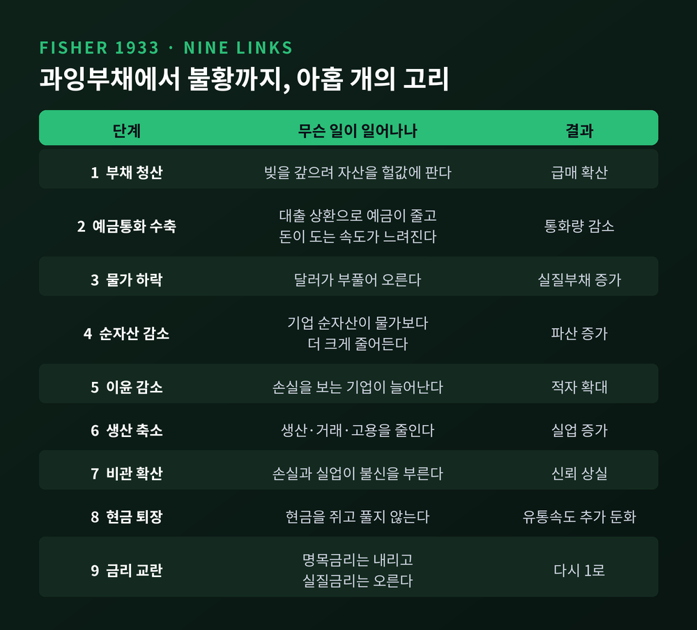
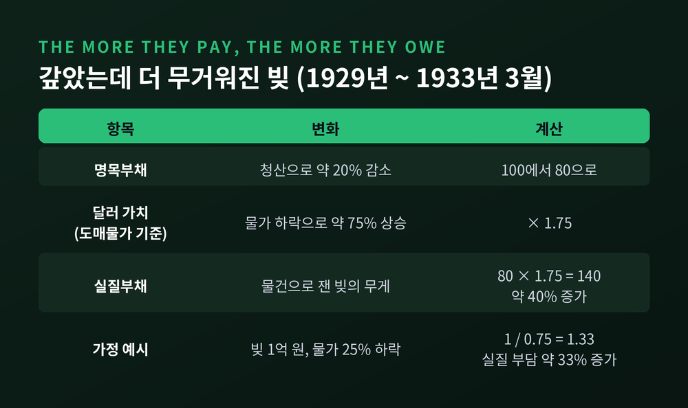
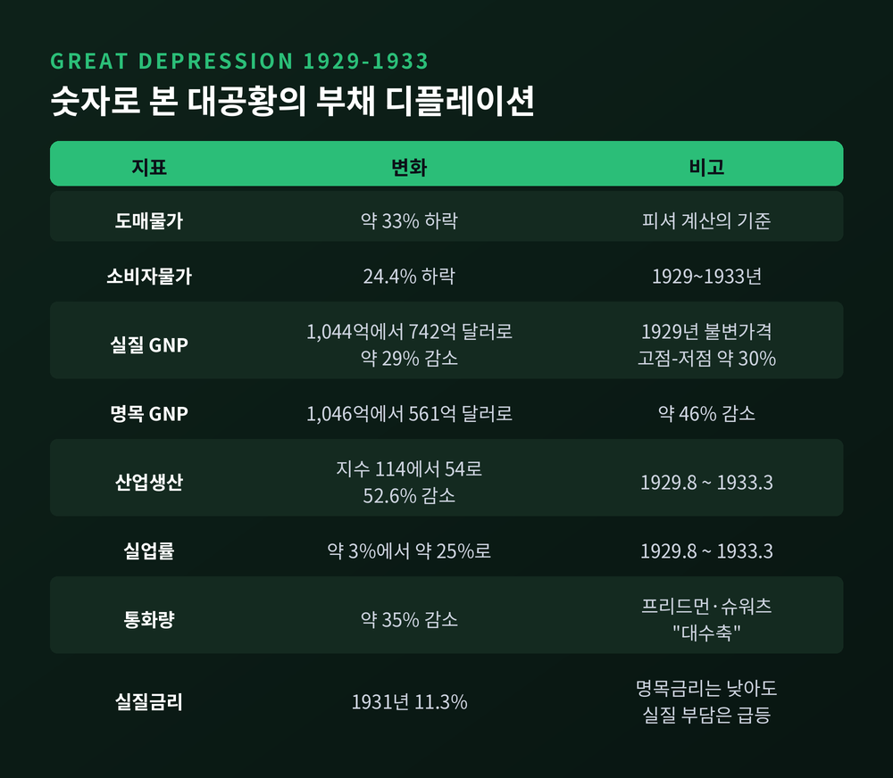
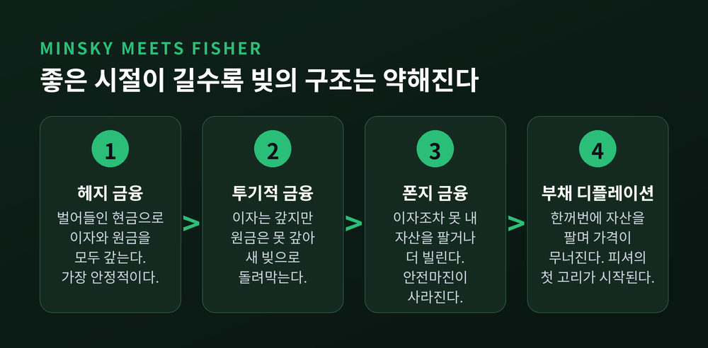
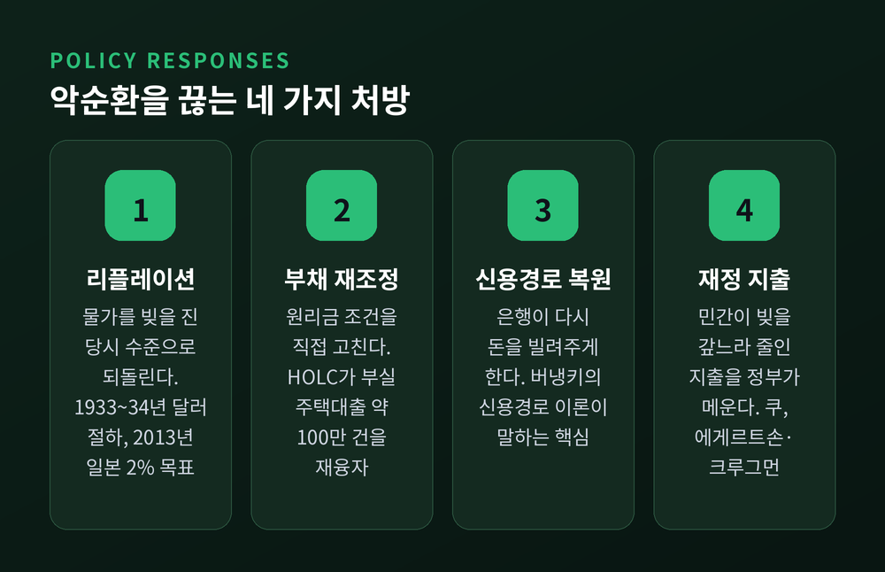

부채 디플레이션 이론, 빚을 갚을수록 빚이 커지는 어빙 피셔의 역설

이번 글에서는 어빙 피셔가 1933년에 내놓은 부채 디플레이션 이론을 정리해 보겠습니다. 빚과 물가 하락이 어떻게 서로를 키우는지, 그 연쇄를 9단계로 따라가 봅니다. 대공황의 숫자, 민스키와 버냉키로 이어진 흐름, 일본과 2008년 이후의 사례, 그리고 처방까지 차례로 짚겠습니다.
세 줄 요약
- 부채 디플레이션은 과잉부채를 서둘러 갚으려는 움직임이 물가를 끌어내리고, 떨어진 물가가 남은 빚의 실질 무게를 키우는 악순환입니다.
- 피셔의 계산으로는 1929년부터 1933년 3월까지 미국의 명목부채는 약 20% 줄었지만, 달러 가치가 약 75% 올라 실질부채는 오히려 약 40% 늘었습니다.
- 처방은 물가를 빚을 진 당시 수준으로 되돌리는 리플레이션, 그리고 원리금 조건 자체를 고치는 부채 재조정입니다.
대공황 한복판에서 나온 49개 조항
논문의 정식 제목은 「대공황의 부채 디플레이션 이론(The Debt-Deflation Theory of Great Depressions)」입니다.
1933년 『이코노메트리카』 창간 첫 권에 실렸습니다. 계량경제학회 회장 연설을 글로 옮긴 형식입니다. 전년도 책 『호황과 불황(Booms and Depressions)』의 핵심을 압축한 것이기도 합니다.
형식이 독특합니다. 피셔는 자기 생각을 49개 조항으로 된 '신조(creed)'라고 불렀습니다. 증명 없이 단정적으로 적었지만, 새 증거가 나오면 얼마든지 고치겠다는 단서를 달았습니다.
이 논문에는 쓰라린 배경이 있습니다.
1929년 10월 15일, 피셔는 뉴욕의 한 연설에서 주가가 "영구적으로 높은 고원"에 이른 것 같다고 말했습니다. 약 2주 뒤 주식시장이 무너졌습니다. 그 자신도 빚을 내 투자했다가 큰 손실을 봤습니다.
폭락 전의 피셔는 주가를 낙관하던 당대의 유명 경제학자였습니다. 폭락 이후의 피셔는 빚이 얼마나 파괴적일 수 있는지를 누구보다 뼈저리게 설명하는 사람이 되었습니다. 그는 청산과 디플레이션이 서로를 키운다는 생각이 1931년에야 떠올랐다고 논문 각주에 적었습니다.
두 가지 병: 부채병과 달러병
피셔는 과잉생산, 과소소비, 과잉투자 같은 흔한 설명을 모두 부차적인 요인으로 돌렸습니다.
큰 호황과 불황을 움직이는 주역은 둘뿐이라고 봤습니다. 처음에 쌓인 과잉부채, 그리고 곧 뒤따르는 디플레이션입니다. 그는 이것을 '부채병'과 '달러병'이라고 불렀습니다.
핵심은 둘의 결합입니다.
과잉부채만 있고 물가가 버텨 주면 경기 변동은 훨씬 온건합니다. 빚이 크지 않은 상태에서 물가만 떨어져도 피해는 작습니다. 부채병이 먼저 오고, 그것이 달러병을 불러올 때 가장 큰 피해가 난다는 것이 피셔의 진단입니다.
그는 이를 감기와 폐렴에 비유했습니다. 감기가 폐렴으로 번지듯, 과잉부채가 디플레이션으로 번진다는 것입니다.
배의 비유도 남겼습니다. 평소의 배는 조금 흔들려도 다시 바로 섭니다. 하지만 일정 각도를 넘어 기울면 원래 자리로 돌아오지 않고, 더 기울다가 뒤집힙니다.
9단계로 따라가는 악순환의 연쇄
피셔는 과잉부채에서 출발해 불황에 이르는 과정을 아홉 개의 고리로 정리했습니다.
출발점은 채무자나 채권자가 불안을 느끼는 순간입니다. 누군가 빚을 서둘러 정리하기 시작하면 다음 일들이 차례로 일어납니다.

- 부채를 청산하려고 자산을 헐값에 파는 급매가 일어납니다.
- 은행 대출이 상환되면서 예금통화가 줄고, 돈이 도는 속도도 느려집니다.
- 그 결과 물가 수준이 떨어집니다. 피셔의 표현으로는 '달러가 부풀어 오릅니다.'
- 기업의 순자산은 물가보다 더 크게 줄고, 파산이 늘어납니다.
- 이윤도 같은 방향으로 줄어듭니다.
- 손실을 보는 기업이 생산과 거래, 고용을 줄입니다.
- 손실과 파산, 실업이 비관과 불신을 퍼뜨립니다.
- 사람들이 현금을 쥐고 풀지 않아 돈의 흐름이 더 느려집니다.
- 명목금리는 떨어지는데 실질금리는 오히려 오릅니다.
눈여겨볼 대목이 있습니다. 피셔는 첫 고리(부채)와 마지막 고리(이자)를 빼면 모든 변동이 물가 하락을 통해 일어난다고 강조했습니다.
한계도 스스로 인정했습니다. 실제 순서는 이 논리적 순서와 다르고, 각 요인이 서로 얽혀 되먹임한다는 것입니다. 그는 한 줄짜리 연쇄보다 "상호작용하는 그물망"으로 봐야 한다고 적었습니다.
실제로 그가 제시한 연대기표에는 뱅크런과 은행의 대출 축소, 은행 파산이 뒤쪽에 등장합니다. 그리고 그 끝은 다시 "더 많은 청산"으로 이어집니다.
갚을수록 더 빚지는 역설, 숫자로 보면
이 논문에서 피셔가 가장 강조한 문장은 짧습니다.
"채무자가 더 많이 갚을수록, 더 많이 빚지게 된다."
원리는 간단합니다. 부채는 명목 금액으로 고정돼 있습니다. 물가가 떨어지면 같은 1달러가 더 많은 물건을 살 수 있는 '더 큰 1달러'가 됩니다. 아직 갚지 못한 빚도 그만큼 무거워집니다.
간단한 가정으로 따져 보겠습니다.
1억 원을 빌린 자영업자가 있다고 해 봅시다. 물가와 매출 단가가 25% 떨어졌습니다. 빚은 여전히 1억 원입니다. 하지만 상품 기준으로 환산하면 1억 원의 무게는 1 나누기 0.75, 즉 약 1.33배가 됩니다. 빚을 한 푼도 늘리지 않았는데 실질 부담이 약 33% 커진 셈입니다.
이 사람이 빚을 줄이려고 재고를 헐값에 팝니다. 모두가 같은 행동을 하면 물가는 더 떨어집니다. 명목 빚은 줄어도 실질 빚은 줄지 않거나 오히려 늘어납니다. 피셔가 "청산이 스스로를 좌절시킨다"고 한 이유입니다.
그는 실제 수치도 제시했습니다.

1929년 미국의 부채는 명목으로도 실질로도 당시까지 사상 최대였습니다. 1933년 3월까지 청산으로 빚은 약 20% 줄었습니다. 그런데 달러의 가치는 약 75% 올랐습니다. 두 숫자를 곱하면 0.8 곱하기 1.75, 곧 1.4입니다. 실질부채가 약 40% 늘어난 것입니다.
다만 과잉부채가 그 정도로 크지 않다면 이야기가 달라집니다. 배가 흔들려도 다시 바로 서는, 평범한 경기순환이 된다고 피셔는 덧붙였습니다.
과잉부채를 재는 법도 흥미롭습니다. 그는 빚의 총액만 보지 말라고 했습니다. 국부와 국민소득에 견준 상대적 크기, 그리고 만기가 언제 돌아오는지가 중요하다고 봤습니다. 당장 갚아야 하는 빚일수록 더 위험하다는 것입니다.
대공황 데이터로 확인하는 연쇄
피셔의 연쇄는 1929~1933년 미국의 숫자와 잘 맞아떨어집니다. 여러 자료를 교차해 보면 다음과 같습니다.

도매물가는 약 33%, 소비자물가는 24.4% 떨어졌습니다. 1929년 불변가격 기준 실질 GNP는 1,044억 달러에서 742억 달러로 약 29% 줄었습니다. 명목 GNP는 1,046억 달러에서 561억 달러로 거의 반 토막이 났습니다.
명목소득은 절반 가까이 줄었는데, 빚은 피셔의 추산으로 약 20% 줄어드는 데 그쳤습니다. 소득 대비 부채 부담이 급격히 무거워질 수밖에 없는 구조였습니다.
산업생산 지수는 1929년 8월 114에서 1933년 3월 54로 52.6% 떨어졌습니다. 실업률은 3% 안팎에서 25% 가까이로 뛰었습니다. 통화량은 약 35% 줄었고, 미국 은행의 3분의 1 이상이 문을 닫거나 다른 은행에 넘어갔습니다.
아홉 번째 고리인 실질금리도 확인됩니다. 1931년 사후 실질금리는 11.3%에 달했습니다. 명목금리가 낮아 보여도 물가가 떨어지니 실제 빌린 돈의 비용은 매우 높았던 것입니다.
당시 연준은 명목금리 하락을 '돈이 풀린 신호'로 읽었습니다. 경제사학자 멜처는 이것을 명목금리와 실질금리를 구분하지 못한 오류로 지적합니다.
가계 쪽 증거도 있습니다. 1920년대 미국 가계는 자동차 할부 같은 부채를 전례 없이 많이 지고 있었습니다. 1930년의 소비 감소는 우연한 위축이 아니라, 할부금을 못 내 차를 뺏기지 않으려는 방어적 절약이었다는 연구가 있습니다.
한동안 잊혔던 이론, 버냉키가 되살리다
피셔의 이론은 오랫동안 학계의 주류가 되지 못했습니다.
반론은 이랬습니다. 디플레이션은 채무자에게서 채권자에게 부를 옮길 뿐이다. 채무자가 잃은 만큼 채권자가 얻으니, 두 집단의 씀씀이가 크게 다르지 않다면 경제 전체로는 중립적이라는 것입니다.
1983년, 벤 버냉키가 이 반론에 정면으로 답했습니다. 논문 「대공황 전파 과정에서 금융위기의 비화폐적 효과」입니다.
버냉키의 논리는 '신용경로'로 불립니다.
평상시라면 물가 하락은 채무자와 채권자 사이의 재분배에 그칩니다. 그러나 충격이 크면 채무자가 파산하고, 은행이 넘겨받은 담보자산의 가치마저 떨어집니다. 은행의 자산이 부실해지면 은행은 대출을 줄이고 안전한 국채로 옮겨 갑니다.
그러면 가계와 농민, 중소기업은 어떤 금리에도 돈을 빌리지 못하게 됩니다. 신용 중개가 끊기면서 실질 차입 비용이 치솟고, 이것이 1929~30년의 경기후퇴를 장기 불황으로 바꿨다는 것이 버냉키의 결론입니다.
통화량 감소를 강조한 프리드먼·슈워츠의 설명을 부정한 것은 아닙니다. 은행 파산이 통화량만이 아니라 신용의 흐름 자체를 망가뜨렸다는 점을 보탠 것입니다.
부채 디플레이션이 작동하려면 두 조건이 필요하다는 정리도 뒤따랐습니다. 사전에 부채가 크게 쌓여 있어야 하고, 디플레이션이 빚을 질 당시에는 예상되지 않았어야 합니다. 대공황은 두 조건을 모두 갖췄습니다.
이 논문은 2022년 노벨경제학상의 핵심 업적 가운데 하나로 꼽혔습니다. 뱅크런을 다룬 다이아몬드·디비그와 함께 받은 상입니다.
해석이 엇갈리는 부분도 있습니다. 버냉키가 피셔를 사실상 기각했다고 보는 비판이 있는 반면, 피셔를 되살리고 다듬었다고 평가하는 경제사학자도 있습니다.
민스키: 빚은 왜 좋은 시절에 쌓이는가
피셔가 '빚이 어떻게 무너지는가'를 설명했다면, 하이먼 민스키는 '빚이 왜 쌓이는가'에 답하려 했습니다.
민스키는 금융불안정 가설을 소개하며 부채 디플레이션의 고전적 서술이 피셔(1933)라고 분명히 적었습니다. 그리고 "부채 디플레이션은 부채 디플레이션을 먹고 자란다"고 썼습니다.
그는 경제주체의 빚 구조를 세 가지로 나눴습니다.

- 헤지 금융: 벌어들이는 현금으로 이자와 원금을 모두 갚을 수 있습니다.
- 투기적 금융: 이자는 갚지만 원금은 못 갚아 계속 새 빚으로 돌려막아야 합니다.
- 폰지 금융: 이자조차 영업 현금으로 감당하지 못해 자산을 팔거나 더 빌려야 합니다.
민스키의 두 번째 정리가 핵심입니다. 호황이 오래 이어질수록 경제는 헤지 중심의 안정된 구조에서 투기와 폰지 비중이 큰 불안정한 구조로 옮겨 간다는 것입니다.
이 상태에서 당국이 인플레이션을 잡으려 돈줄을 죄면 투기적 주체가 폰지 주체로 바뀝니다. 현금이 모자란 주체들이 한꺼번에 자산을 팔고, 자산 가격이 무너집니다. 바로 피셔의 첫 번째 고리인 급매가 시작되는 지점입니다.
사실 피셔도 이 방향의 단서를 남겼습니다. 새 발명과 새 산업이 큰 수익 기회를 만들면, 싼 돈이 과잉차입을 부른다고 봤습니다. 6%로 빌려 연 100% 넘게 벌 수 있다고 믿으면 누구나 빚을 내고 싶어진다는 것입니다.
그는 빚을 지는 대중 심리가 네 단계를 거친다고도 적었습니다. 먼 미래 수익에 대한 기대, 시세차익에 대한 희망, 무모한 사업 홍보의 유행, 그리고 노골적인 사기입니다. 민스키의 이행 논리를 반세기 앞서 스케치한 셈입니다.
일본의 1990년대: 금리 0에서도 빚부터 갚은 기업들
일본은 피셔의 연쇄가 현대에 어떻게 변주되는지 보여줍니다.
1980년대 후반 자산과 신용이 함께 부풀었고, 1990년대 초 주가와 지가가 급락했습니다. 지가 하락폭은 지표에 따라 다릅니다. 전국 기준으로는 정점의 절반 정도, 6대 도시 상업지는 80% 가까이 떨어졌다는 집계가 있습니다.
노무라의 리처드 쿠는 이 시기를 '대차대조표 불황'이라 불렀습니다.
자산 가격이 무너지자 많은 기업의 자산이 부채보다 작아졌습니다. 기업들은 이윤을 늘리는 것보다 빚을 줄이는 것을 최우선으로 삼았습니다. 금리가 0에 가깝고 돈이 풀려도 빌리지 않고, 벌어들인 이익으로 빚부터 갚았습니다. 쿠는 이 집단적 부채 축소가 디플레이션과 부실채권 문제의 뿌리라고 봤습니다.
피셔의 연쇄와 다른 점도 분명합니다. 일본의 디플레이션은 1998~2012년 누적 약 4%로 완만했습니다. 1930년대처럼 물가가 몇 년 사이 4분의 1씩 떨어지는 폭락은 아니었습니다. 대신 10년 넘게 끈질기게 이어졌습니다.
반론도 적어 둡니다. 국제결제은행(BIS)은 고령화를 감안하면 2000~2013년 일본의 생산가능인구당 실질 성장이 20%를 넘어 미국(약 11%)보다 높았다고 분석했습니다. 일본의 장기 침체를 전부 디플레이션 탓으로 돌리기는 어렵다는 뜻입니다.
일본은행은 2013년 1월 소비자물가 2% 목표를 도입하고, 같은 해 4월 양적·질적 금융완화에 나섰습니다. 피셔가 말한 리플레이션의 현대판이라 할 만합니다.
2008년 이후: 가계가 빚을 줄일 때 생기는 일
2008년 금융위기에서는 기업이 아니라 가계가 주인공이었습니다.
미안과 수피의 『빚으로 지은 집(House of Debt)』에 따르면, 2000~2007년 미국 가계부채는 두 배로 늘어 14조 달러에 이르렀습니다. 소득 대비 부채비율은 1.4에서 2.1로 뛰었습니다. 지난 100년 동안 이만한 증가는 대공황 초기에만 있었다고 합니다.
뉴욕 연방준비은행 통계로 보면 가계부채는 2008년 3분기 12조 6,800억 달러로 정점을 찍었습니다. 이후 4년 동안 약 1조 4,000억 달러가 줄었습니다. 두 수치는 집계 기준이 달라 차이가 납니다.
미안과 수피는 빚이 많은 가계가 부채를 줄이면서 소비를 급격히 줄였고, 이것이 2007~09년 일자리 감소의 대부분을 설명한다고 분석했습니다.
차이는 물가에서 났습니다. 미국 소비자물가는 2009년 연평균 0.4% 떨어졌습니다. 1955년 이후 처음 있는 연간 하락이었지만, 1930년대처럼 누적적인 디플레이션으로 번지지는 않았습니다.
위기 당시 연준 의장은 대공황 연구자 버냉키였습니다. 그는 2002년 연설에서 이미 경고한 바 있습니다. 채무자가 낮은 금리로 빚을 갈아타더라도, 물가가 떨어지면 원금은 실질 가치가 커진 달러로 갚아야 한다는 것입니다. 그리고 금리가 0이 되어도 중앙은행에는 쓸 수단이 남아 있다고 강조했습니다.
2012년에는 에게르트손과 크루그먼이 '피셔-민스키-쿠 접근'이라는 부제를 단 논문을 냈습니다. 일부 경제주체가 급하게 빚을 줄여야 할 때 총수요가 무너지는 모형입니다. 여기서 피셔식 부채 디플레이션과 확장적 재정정책의 근거가 함께 도출됩니다. 90년 전의 직관이 현대 거시모형 안으로 들어온 것입니다.
처방: 물가를 되돌리거나, 빚을 고치거나
피셔의 처방은 분명했습니다.
물가 수준을 채무자들이 빚을 졌던 당시의 평균 수준까지 되돌리고, 그 뒤로 유지하라는 것입니다. 그는 "자연에 맡기자"는 태도를 폐렴 환자를 방치하는 의사에 빗대며 비판했습니다.

역사 속 대응은 크게 네 갈래로 나눠 볼 수 있습니다.
첫째, 리플레이션입니다. 루스벨트 정부는 1933년 4월 금본위제를 정지하고, 10월부터 금을 점점 비싼 값에 사들여 달러를 절하했습니다. 목표는 밀과 면화 같은 상품 가격을 1926년 수준으로 되돌리는 것이었습니다. 1934년 1월에는 금 공식가격을 온스당 20.67달러에서 35달러로 올렸습니다.
둘째, 부채 재조정입니다. 1933년 설립된 주택소유자대출공사(HOLC)는 1936년까지 부실 주택담보대출 약 100만 건을 사들여 새 조건으로 바꿔 줬습니다. 규모는 30억 달러, 당시 주택담보대출 잔액의 약 20%였습니다. 계약서의 금 약관을 폐지한 것도 금으로 표시된 빚이 불어나는 것을 막는 조치였습니다.
셋째, 은행과 신용의 흐름을 되살리는 일입니다. 버냉키의 신용경로 이론이 말해 주듯, 은행이 대출을 멈추면 금리를 내려도 돈이 돌지 않습니다.
넷째, 재정 지출입니다. 민간이 한꺼번에 빚을 갚느라 지출을 줄이면, 그 빈자리를 정부가 메워야 한다는 논리입니다. 쿠의 주장이기도 하고, 에게르트손·크루그먼 모형의 결론이기도 합니다.
평가는 어땠을까요. 당시 루스벨트의 금 정책은 "완전히 비도덕적"이라는 비난까지 받았습니다. 하지만 이후 프리드먼·슈워츠, 멜처, 버냉키, 로머 같은 경제학자들은 리플레이션이 회복을 앞당겼다고 결론 내렸습니다. 금본위제를 먼저 떠난 나라일수록 먼저 회복했다는 에이컨그린·색스의 연구도 있습니다.
그렇다고 만능은 아닙니다. 피셔 자신도 물가를 안정시켜도 부채병 자체는 남는다고 인정했습니다. 미국 물가가 1926년 수준을 되찾은 것도 1944년에 이르러서였습니다.
정리하면 이렇습니다.
부채 디플레이션은 빚이 많다는 사실만으로 생기지 않습니다. 모두가 동시에 빚을 줄이려 할 때, 그 합이 물가를 끌어내리면서 시작됩니다. 한 사람에게는 합리적인 절약이 모두에게는 함정이 되는 구조입니다.
유동성 함정이 '금리가 더 내려가지 않는 문제'였다면, 부채 디플레이션은 '빚의 실질 무게가 스스로 불어나는 문제'라고 할 수 있습니다. 두 현상은 자주 함께 나타나지만, 출발점은 다릅니다.
"빚을 갚을수록 빚이 커진다" — 피셔가 남긴 이 역설은 지금도 부채가 많은 경제를 읽는 가장 짧은 경고문입니다.
물가 하락 소식을 반갑게만 받아들여도 되느냐고 물으신다면, 먼저 그 경제가 얼마나 많은 빚을 지고 있는지부터 살펴보시라고 답하겠습니다.